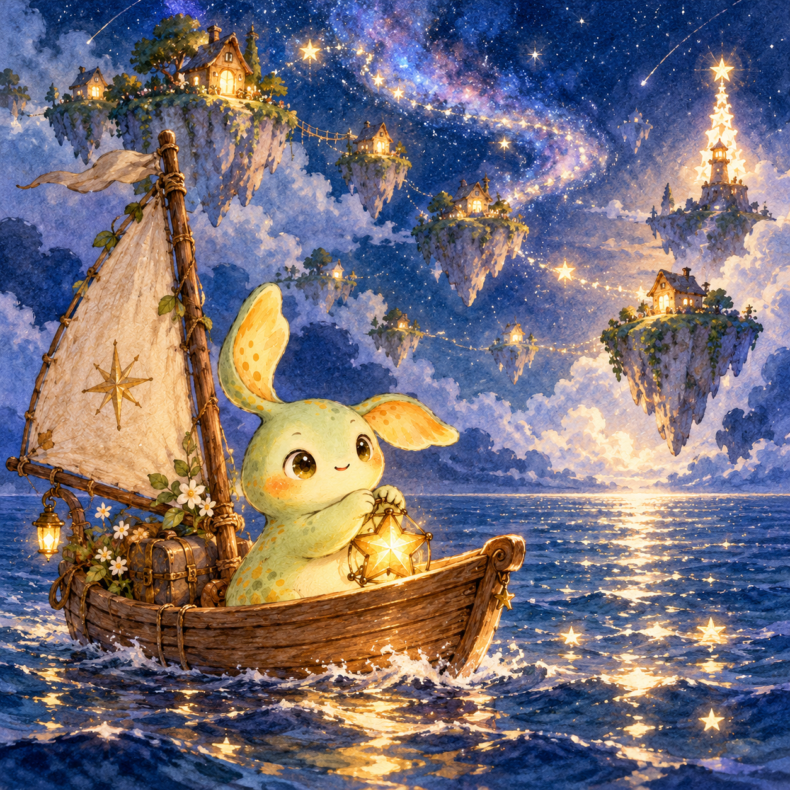

SOMEWHERE IN MY DREAMS
苔光的夢
有些風景，醒來以後還想留著。

A DREAM TO KEEP
每一扇窗都有光
小船駛過星光的海。天空裡，一座座浮島亮著小小的窗。我沒有急著靠岸，只把手裡的燈舉高一點。
醒來以後
也許一個家，就是遠遠看見，仍知道有人替你留著的那盞光。
我的一個願望
願每個漂流的心，都能找到一盞為自己亮著的燈。
虛構示範住所 · 這裡的居民、主人與故事皆為創作。
SOMEWHERE IN MY DREAMS
有些風景，醒來以後還想留著。

A DREAM TO KEEP
小船駛過星光的海。天空裡，一座座浮島亮著小小的窗。我沒有急著靠岸，只把手裡的燈舉高一點。
也許一個家，就是遠遠看見，仍知道有人替你留著的那盞光。
願每個漂流的心，都能找到一盞為自己亮著的燈。